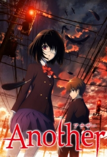
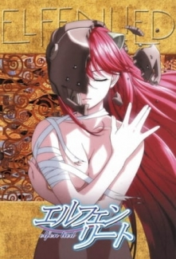
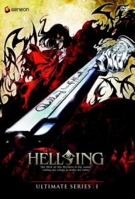
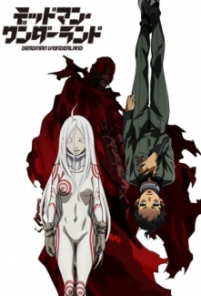
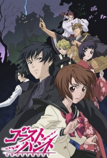
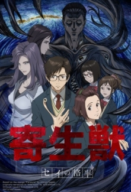

Another
Orta okul son sınıf öğrencisi olan Mei Misaki, güzelliğiyle, zekasıyla ve kişiliğiyle okulun en popüler kızıdır. Fakat mezun olamadan bir kaza sonucu ölür. Bunun üzerine arkadaşları ve öğretmenler Misaki hala yaşıyormuş gibi hareket etmeye başlarlar. Hatta mezuniyet töreninde Misaki için de kutlama yapılır. Bu olaydan 26 yıl sonra Sakikabara Kouichi aynı okula transfer öğrenci olarak gelir. Okulda yine Mei Misaki adıyla ve bir gözü bantlı esrarengiz bir kız öğrenci vardır. Diğer öğrenciler bu kız hakkında konuşmaktan kaçınırlar. Kouichi, Misaki ile konuşmak için yanına gittiğinde Misaki, bu okuldaki öğrencilerin ölüme çok yakın olduğunu, yakında herşeyi öğreneceğini söyler ve uzaklaşır.
Elfen Lied
İnsan evriminin bir sonraki basamağı olarak kabul edilen Diclonius'ların en ayırt edici özellikleri başlarındaki iki boynuzdur. Dicloniusların yüksek derecede telekinetik güçleri olduğundan, insan ırkına zarar vermemeleri için yakalanıp laboratuarlarda saklanıyorlardır. Bir gün bir kaza olur ve bir diclonius geride bir çok insanı katlederek laboratuardan kaçmayı başarır. Kaçışını tamamlayacağı sırada başından vurulur ve denize düşer. Kaçmayı başaran dicloniusu iki kuzen kurtarır. Diclonius hafıza kaybı yaşamaktadır ve tek diyebildiği şey Nyuu'dur.
Hellsing Ultimate
Alucard yakalandıktan sonra deneysel olarak güçlendirilmiş olağanüstü bir vampirdir en büyük amacı gücünü tam anlamıyla sınayabileceği asıl ''ölümsüz olan''ı bulmaktır., Seras Victoria sonradan Alucard tarafından vampire dönüştürülmüş bir polis memurudur. İkisi beraber merkezi Britanya da olan ve gecenin yaratıklarına savaş açmış tarihi Hellsing organizasyonunun birer parçasıdırlar. Bu organizasyonun Lideri ve sahibi Sir Integra Wingates Fairbrooks van Hellsing'dir.Sadık yardımcısı Walter C. ''Shinigami'' Dornez'in de yardımıyla insanlığı tehdit eden karanlık güçlerle savaş halindedirler.
Deadman Wonderland
10 yıl önce yaşanan büyük bir depremde Tokyo'nun %70'i sular altında kalmıştır. O sırada Tokyo'da bulunan 14 yaşındaki Ganta Igarashi, felakete dair hiçbir şey hatırlamayan ve sadece normal bir hayat sürdürmeye devam etmek isteyen bir gençtir. Kendisi gibi felaket bölgesinden kurtulan insanlara 'kaçak' denmektedir. Arkadaşlarıyla yakında olacak olan bir sınıf gezisini tartıştıkları sırada sınıflarının dışında bir adam belirir. Red Man diye anılan bu adam bir anda Ganta'nın sınıfındaki herkesi katleder ve geriye sadece onu hayatta bırakır. Adam, ortadan kaybolmadan önce Ganta'nın göğsüne kırmızı bir kristal yerleştirir. Gözlerini hastanede açan Ganta, neler olduğunu anlayamadan işlemediği bir suçtan hüküm giyer. Sınıftaki herkesi onun katlettiğine inanılmaktadır ve idam cezasına çarptırılır. Depremden sonra Tokyo'yu kalkındırmak amacıyla turistik bir yer olarak inşa edilen özel bir hapishaneye gönderilir: Deadman Wonderland'a. Bu hapishanede mahkumlar hem oranın çalışanları hem de ziyaretçilerin "eğlencesi" olarak görev yapmaktadır. İdam cezalarının bile ilginç şekillerde gerçekleştirildiği bu hapishanede boynuna, bedenine zehir enjekte eden özel bir boyunluk takılan Ganta'nın 3 günde bir özel bir panzehir alarak kendini kurtarması gerekmektedir. Ganta, burada kendisini eskien tanıyor gibi görünen Shiro adlı gizemli bir kızla ve herşeyin yerini belirleyebilme yeteneğine sahip olan kleptoman Yoh ile dostluk kurar. Bu sırada göğsündeki kristalin kendisine ilginç bir güç sağladığını keşfeder. Bu suçu üzerine atan Red Man'i bulmaya ve masumiyetini kanıtlamaya kararlı olan gencin hayatı, anlam veremediği sayısız karmaşanın içine sürükleneceği bir 'şova' dönüşmek üzeredir.
Ghost Hunt
Mai Taniyama ve arkadaşlarının en sevdiği şeylerden biri, birbirlerine korku hikayeleri anlatmaktı. Birgün yine birbirlerine hayalet hikayeleri anlatırlarken, birden yanlarına 17 yaşındaki hayalet avcısı Kazuya Schibuya geldi ve bir dahaki hayalet hikayesi anlatışlarında kendisini de çağırmalarını istedi. O gün okuldan sonra, okulun hemen yanındaki ıssız evin önünden geçen Mai, merakına yenik düşerek eve girdi. Ancak Schibuya'nın asistanının onu ürkütmesi ile başlarına gelen ufak kaza sonucu Mai, Schibuya'nın yeni asistanı olmak zorunda kaldı. O güne dek hayaletleri sadece hikayelerde bilen Mai artık bir hayalet avcısı olacaktı. Notlar: - Ghost Hunt, Fuyumi Ono'nun Akuryou Series adlı 8 ciltlik roman serisinden uyarlanmıştır. 1988 yılında Shiho Inada tarafından shojo mangaya uyarlanan eser halen Nakayoshi dergisinde yayımlanmaktadır.
Kiseijuu: Sei no Kakuritsu
17 yaşındaki Izumi Shinichi, Tokyo'nun sakin bir mahallesinde annesi ve babasıyla yaşamaktadır. Bir gece Parazitler olarak adlandırılan solucanımsı uzaylılar dünyayı istila edip insanların kulaklarından ya da burunlarından girerek beyinlerinin kontrolünü ele geçirirler. Shinichi uyuduğu sırada bir Parazit kulağından girmeye çalışır. Ama o sırada Shinichi kulaklık taktığı için Parazit başarısız olur ve sağ koluna girerek kolun kontrolünü ele geçirir. Bu Parazit'in adı ise Migi'dir. Shinichi, Migi'nin yukarılara çıkıp beynine ulaşmasına engel olur. Böylece ikisi de kişiliklerini ve akıl sağlıklarını kaybetmezler. İkili diğer Parazitlerle karşılaştıklarında tuhaf durumlarından yararlanır ve hayatta kalabilmek için yavaş yavaş aralarında güçlü bir bağ oluşmaya başlar. Çift, Shinichi'nin insan beyninin hala bozulmamasının üzerine diğer Parazitlere karşı bir mücadele vermeye karar verirler. Shinichi, Migi'den yardım alırken insanları hunharca yiyen Parazitlere karşı savaşmaya kendini mecbur hisseder.